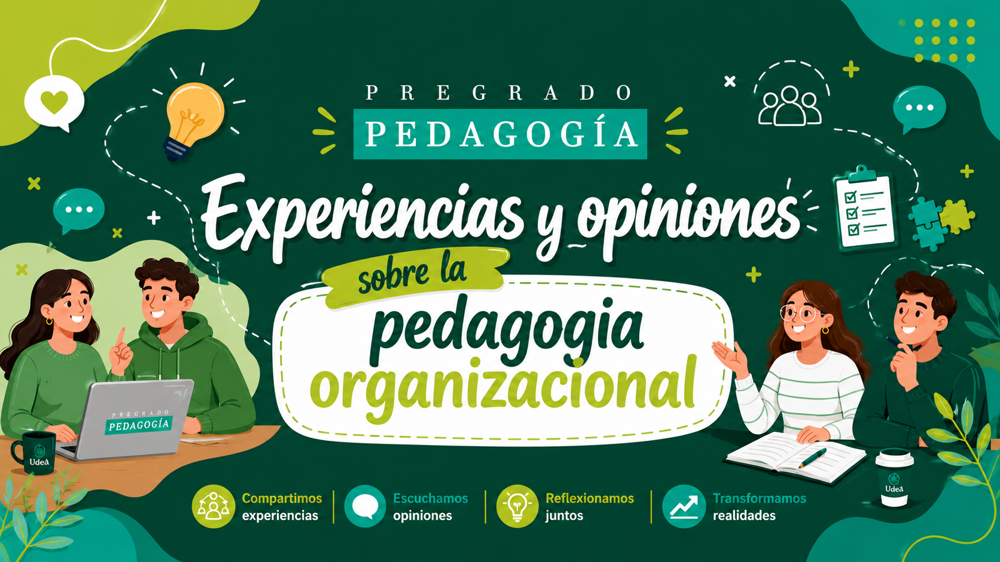

Testimonios y vivencias de estudiantes de Pedagogía sobre la práctica organizacional, recogidos a través de entrevistas y conversaciones académicas.
A continuación se presentan las voces recogidas durante el ejercicio de entrevista. El objetivo es mostrar cómo distintos compañeros interpretan la pedagogía organizacional desde su experiencia académica y personal.
Para mí la pedagogía organizacional es un campo en el que se estudia y se aplican procesos formativos dentro de organizaciones, empresas o instituciones. Un pedagogo en este espacio podría diseñar talleres, capacitaciones formativas para empleados, trabajar en bienestar y realizar evaluaciones o retroalimentación a las entidades.
Podría pensar que se trata de aquello que se encarga de realizar planeaciones, proyectos e instrucciones acerca de cómo se va a realizar alguna actividad.
Es el conjunto de estrategias educativas que una institución diseña y aplica intencionalmente para desarrollar las capacidades de su personal. Diagnostica las necesidades de aprendizaje de cada individuo, equipo o área, y a partir de ahí crea dispositivos pedagógicos a la medida: talleres, mentorías, comunidades de práctica, aprendizaje en el puesto.
Para mí, la pedagogía organizacional es la forma en que una organización como una empresa, institución educativa o fundación promueve el aprendizaje, la formación y el desarrollo de las personas dentro de ella.
Para mí, la pedagogía organizacional es la forma en que una organización como una empresa, institución educativa o fundación promueve el aprendizaje, la formación y el desarrollo de las personas dentro de ella.
Relacionando con el nombre, me suena a que busca formas más efectivas de clasificar conocimientos o saberes relacionados a la educación o que directamente se enfoca en el entorno corporativo.
La pedagogía organizacional para mí es la disciplina que aplica metodologías, estrategias, métodos educativos e investigativos en un entorno laboral, mostrando así muchas veces las falencias en los entornos laborales pero dando también soluciones estratégicas para la buena aplicabilidad de las metodologías en estos espacios y conseguir su objetivo trazado.
Para mí, la pedagogía organizacional es la rama de la pedagogía que se encarga de los procesos educativos que ocurren dentro de las organizaciones en todos sus momentos. Desde el ingreso de las personas, mediante procesos de inducción y adaptación, pasando por su tiempo de permanencia, con procesos de capacitación, formación continua, construcción de cultura organizacional, liderazgo y acompañamiento frente a los cambios internos de la institución. También considero muy importante la etapa del egreso, que muchas veces es invisibilizada, donde entran procesos como la gestión del conocimiento de los que se van y el acompañamiento a las personas en la construcción de un proyecto o plan de vida después de su salida de la organización.
Para mí la Pedagogía Organizacional es un campo de acción de la pedagogía que, apoyándose en la andragogía, se enfoca en diseñar y desarrollar procesos de enseñanza y aprendizaje dirigidos a adultos dentro de las organizaciones. Su propósito es fortalecer conocimientos, habilidades y competencias que favorezcan no solo el desempeño eficiente en sus funciones, sino también el crecimiento personal, profesional y la adaptación a las dinámicas y necesidades de la organización.
Para mí, la pedagogía organizacional es el campo que estudia y acompaña a las organizaciones sociales, comunitarias u de otra índole, como espacios donde también se forman y se construyen saberes. No se trata solo de "enseñar" o generar "talleres", sino de acompañar aquellos procesos donde las comunidades de cada organización producen conocimiento desde sus propias experiencias. En este sentido, el pedagogo cumple un rol de mediador, formador e investigador que diseña, orienta y evalúa proyectos.
Yo lo defino como un campo que aplica principios, métodos y estrategias de educación y formación dentro de un entorno organizacional con la finalidad de propiciar el desarrollo de competencias y la transformación de cultura e identidad de las personas que lo integran. Para el campo es habitual desarrollar funciones como el diseño y la gestión de programas de formación, la facilitación de cambio y transformación organizacional y la evaluación del impacto del aprendizaje en el desempeño.
El campo profesional que se ocupa de los procesos educativos y de formación en el contexto organizacional. Lo organizacional refiere a todo lo relacionado con el funcionamiento, la estructura, los procesos y el comportamiento dentro de una organización o empresa.
Para mí la pedagogía organizacional es al interior de una organización analizar los factores educativos, la idea, la productividad, el alcance, el público dependiendo de donde sea. Se piensa el contexto de los trabajadores dentro de ella y las herramientas que se pueden usar para su alcance. Se extiende al acompañamiento de los empleados en todo su proceso, desde la formación inicial hasta el desempeño.
Llegué al call center por medio de una oferta de trabajo en un grupo de personas bilingües y trilingües. No me postulé para formadora; por un imprevisto tomaron en cuenta mi perfil para cubrir a otro compañero. Acepté porque me gusta aprender y tenía mucho conocimiento del producto.
Fue todo un reto enfrentarme a los grupos para enseñar. Si bien ya teníamos material establecido, había que buscar la manera de transmitir la información. No fue fácil, sin embargo contaba con compañeros que me daban ideas y material para dinamizar el proceso de formación.
Tuve varios grupos, siempre fue mucha comunicación con los aspirantes sobre qué cosas funcionaban y cuáles no. A medida que iba formando los grupos, descubría mi estilo de enseñanza y lo que iba mejor tanto para el grupo como para mí.
Normalmente se programa toda la formación con los otros formadores para tener un calendario de qué temas se abordan cada día, asegurando que todos los grupos tengan una experiencia similar. Me apoyo en todo lo que se ha planeado con antelación.
Como traductora, me ayudaba mucho el nivel de lengua para preparar vocabularios e información que mejoraran la comunicación y la experiencia del cliente. Creo que mi experiencia como traductora puede ser de mucha utilidad en el call center para cualquier posición.
Mi estilo no es tan dinámico; para evitar distracciones utilizo ejemplos de situaciones reales del servicio, hacemos pausas para despejar la mente, los aspirantes se explican temas entre sí eligiendo a alguien al azar, y uso plataformas para quizzes y juegos con los errores más recurrentes.
Lo más difícil es evitar el desgaste mental de las personas y el mío. Trato de mantener buena comunicación, estar pendiente del lenguaje no verbal y mostrarme abierta a resolver dudas, de modo que los aspirantes puedan expresar sus inquietudes o pedir una pausa cuando lo necesiten.
Para mí es más importante que el asesor desarrolle habilidades de comunicación que memorice información técnica. En la formación realizamos roleplay de llamadas comunes, escuchamos llamadas reales, tenemos charlas para manejar situaciones difíciles y fortalecemos el vocabulario de la campaña.